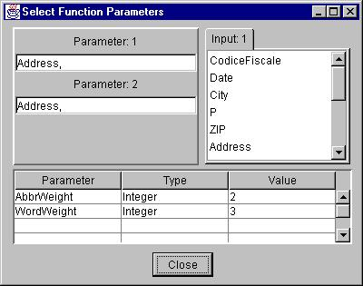
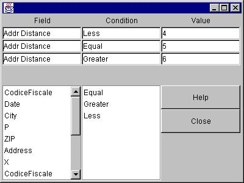
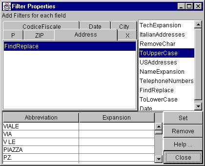

Functions
AddrDistance
DateDifference
EditDistance
WordDistance
HashMatch
SortMatch
Classifier
Filter
Properties
Parameter 1: One or more columns from Input 1. Drag and drop
the columns from the list on the right, to this textfield. When more than
one column is given as a parameter, the values of the specified columns
get appended with each other, when being processed. To make any changes,
delete and add columns again.
Parameter 2: One or more columns from Input 2. When there
is only one input to the block, this is also selected from Input 1.
Additional Parameters: Some functions have additional
parameters the names and current values of which appear in the bottom
table in this window.

Matching Functions
Each record of the output of a matching functions consists of two matching
records one from each input.
SortMatch
Both inputs are sequential. The input columns that are to be matched are
assumed to be in sorted order. Uses mergesort to find the records in which
the specified (by parameters) columns match. Can also add custom functions
to do more processing on the input columns.
HashMatch
First input is random access, where as the second input is sequential.
Uses hashing to find matched records in which the specified (by paramters)
columns match.
Distance Calculation Functions
These functions take one sequential input, computes the specified distance
between the specified column values and adds that distance as an additional
column in the output record.
EditDistance Uses the standard edit distance algorithm for strings.
Uses the parameter character weight in the computation.
WordDistance This custom function adds the word weight (parameter)
for every different or missing word in the string, to the word distance.
AddrDistance This custom function is an extension of the WordDistance
function. It adds another weight for those words which have the same beginning.
DateDifference This custom function finds the difference in
date fields of two Italian codice fiscales.
Classifier
The classifier takes in conditions and an input record that satisfies a
condition gets transferred to the corresponding output. For example, an
input records which satisfies condition 2 will be available in output 2.
A record that satisfies conditions 1 & 3 will be available in both
outputs 1 & 3.
Properties
Each row in the table at the top corresponds to a condition. Each condition
has three fields. Example, AddrDistance < 4
-
name of the column, for the condition. This can be dragged
and dropped from the names of columns in the list below. (Addr Distance
in example)
-
operator to be used in the condition. Can be dragged and
dropped from lis containing operators. (< in example)
-
The value against which the column should be compared. (4
in example)

Filter
This allows the user to apply filtering/preprocessing functions in the
input data to bring them to a consistent format. Make sure its input
is connected before setting its properties.
Properties
-
Select the column from the tabbedpane for which you want to add filters.
-
Drag and drop the filter from the list on the right, to the list under
the selected tab.
-
Select each filter in the tabbedpane and enter parameter values, if any,
in the bottom table.
-
Click on Set for the properties to be applied to the current
filter, before selecting another filter.

Types
-
ToUpperCase: changes any lower case character to uppercase
-
ToLowerCase: changes any upper case character to lowercase
-
RemoveChar: removes the occurences of the character given as a parameter
-
Date: currently removes - from the date
-
TelephoneNumbers: currently removes - from telephone numbers
-
TechExpansion: does expansion of commonly used technical abbreviations.
The parameter table displays the default values which can be edited and
new values can be added. The expansions are applied in the order in which
they are listed under parameters. Remember to click on Set
for the changes to be effective.
-
FindReplace: Parameter to this filter contains a list of find and
replace strings pairs and they are applied to the value of the input column
in the order in which they are specified.
-
NameExpansion: similar to the above, the default values being expansions
of proper names
-
ItalianAddresses:
-
USAddresses: does expansions of commonly used abbrevations in addresses